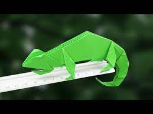

Origami Designs
About Us
Follow Us

Pigeon
- Columbidae is a bird family consisting of pigeons and doves. It is the only family in the order Columbiformes. These are stout-bodied birds with short necks, and short slender bills that in some species feature fleshy ceres. They primarily feed on seeds, fruits, and plants.
- Scientific name: Columbidae
- Family: Columbidae; Leach, 1820
- Length: Marquesan imperial pigeon: 55 cm, Western crowned pigeon: 70 cm, Dwarf fruit dove: 13 – 15 cm

Camel
- A camel is an even-toed ungulate in the genus Camelus that bears distinctive fatty deposits known as "humps" on its back. Camels have long been domesticated and, as livestock, they provide food and textiles.
- Lifespan: Dromedary: 40 years
- Scientific name: Camelus
- Speed: 65 km/h (Maximum, In Short Bursts, Running)

Chameleon
- Chameleons or chamaeleons are a distinctive and highly specialized clade of Old World lizards with 202 species described as of June 2015. These species come in a range of colors, and many species have the ability to change color.
- Scientific name: Chamaeleonidae
- Higher classification: Acrodonta
- Family: Chamaeleonidae; Rafinesque, 1815